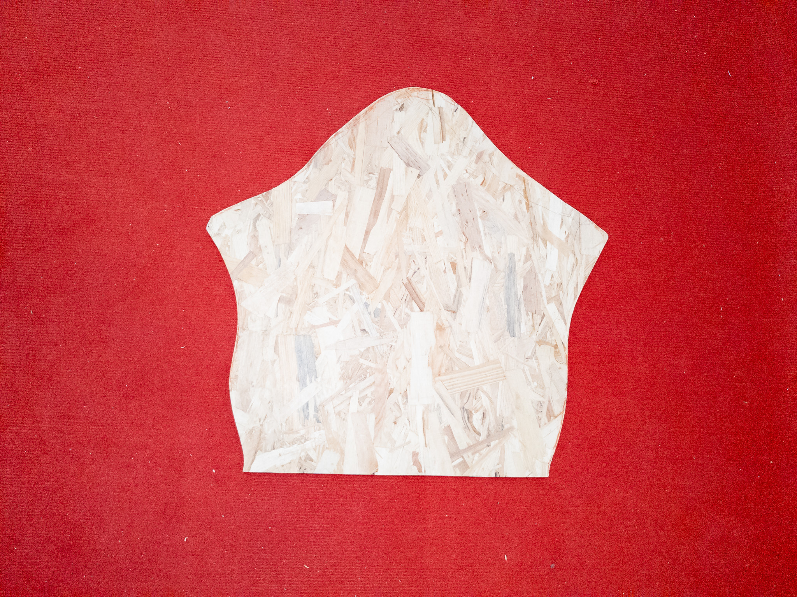

a maker-do-er, speaks in the first person,
works with the body through video, photography and drawing using everyday objects, fabric and wood,
motivated by relationships between individuals, objects and spaces. struggling to differentiate, looks for ways to dissipate borders with attention to subjective experience,
occupied with somatic resistances which reflect into ways of being and making; with singularity and the necessity of building aesth(ethics) with an ontological methodology,
searches through the instinct to stay still; moves without ease,
thinks of the 'i' plurally,
is happy with making.

joana franco (2001) pt-nl